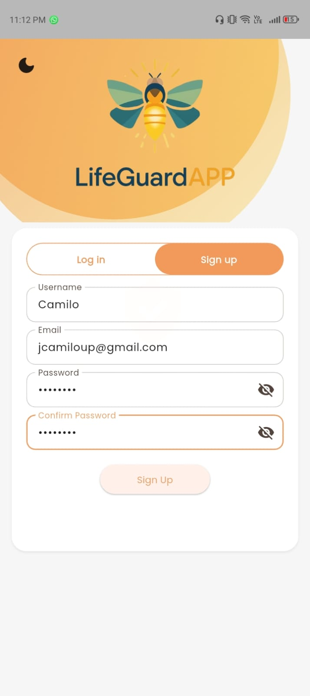
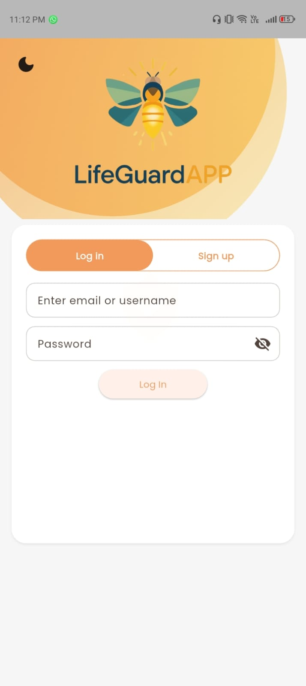
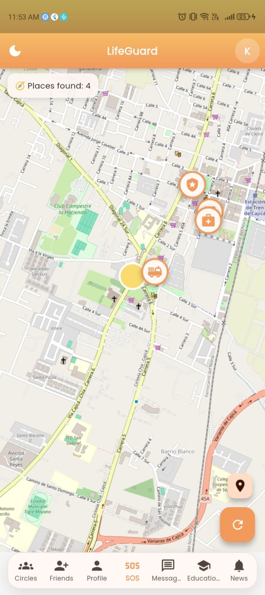
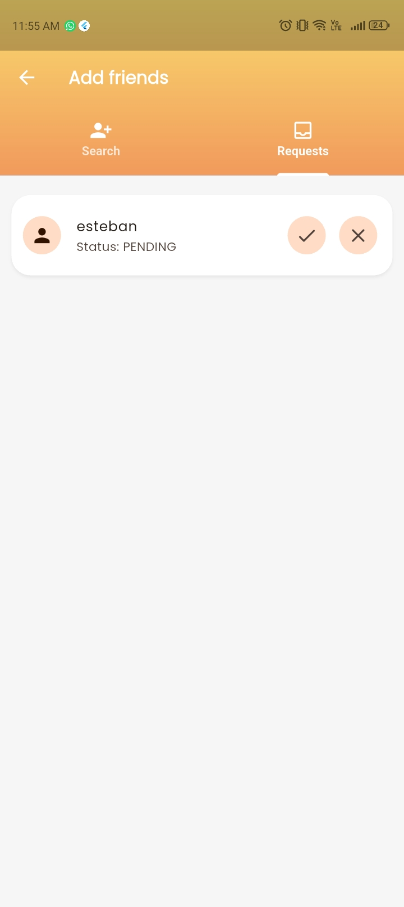
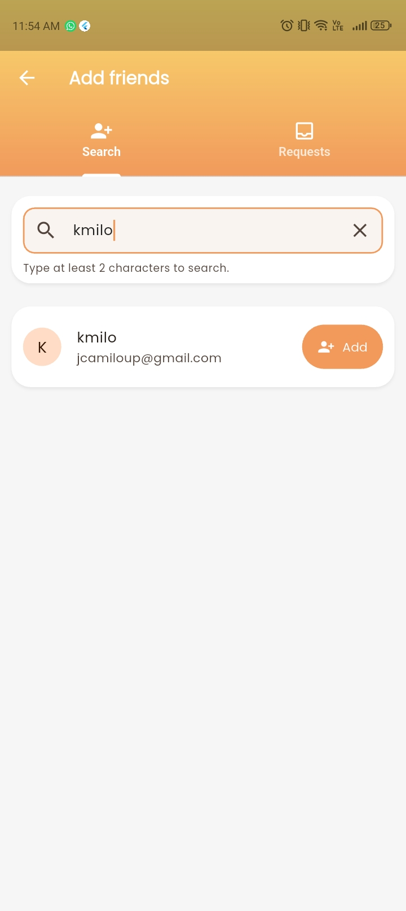
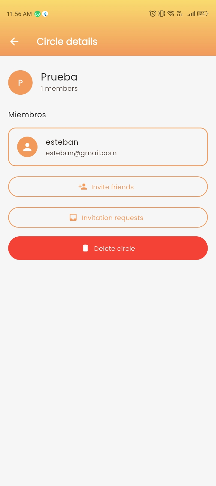
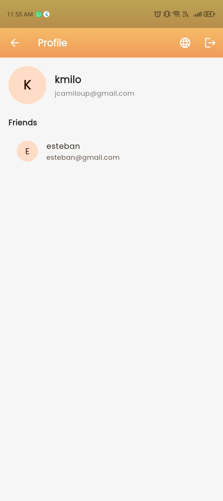
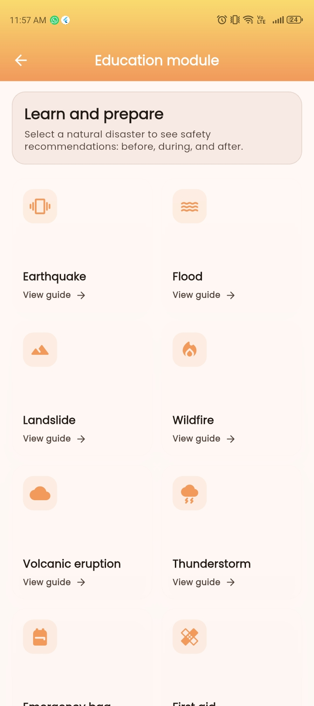
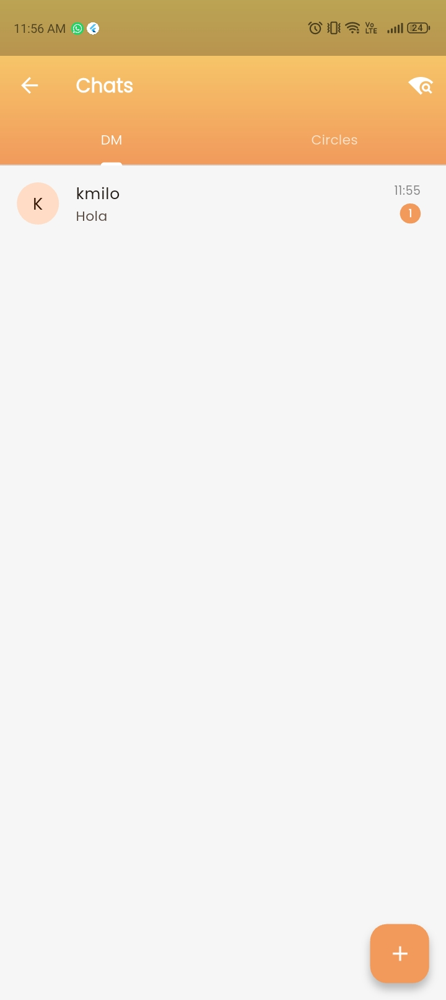
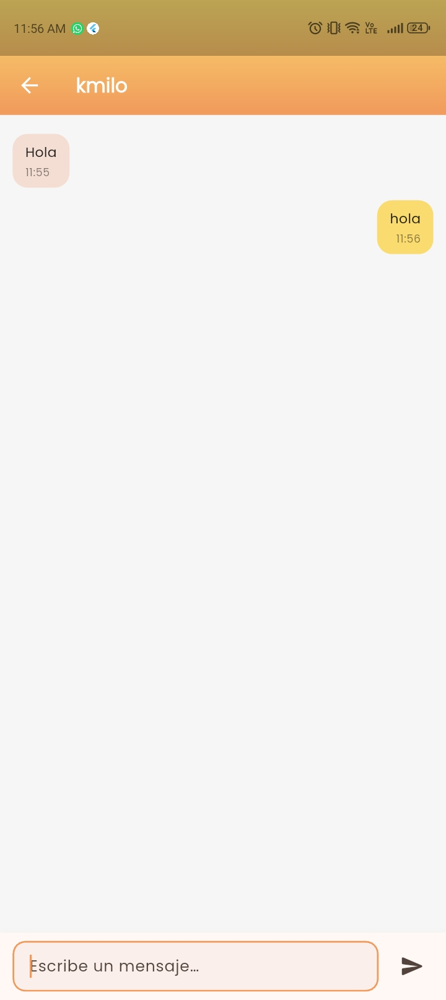

Comunicación P2P y redes mesh
Permite comunicación directa entre dispositivos cercanos sin depender por completo de estaciones base o Internet tradicional.
LifeGuardAPP es una aplicación móvil multiplataforma pensada para brindar asistencia antes, durante y después de una emergencia. Su propuesta integra comunicación descentralizada, geolocalización, alertas verificadas y contenido educativo para que las personas, sus familias y las comunidades puedan actuar con mayor claridad, rapidez y confianza.

La propuesta está pensada para apoyar la preparación, la respuesta y la recuperación ante emergencias.
La app busca fortalecer la resiliencia comunitaria y la coordinación con equipos de emergencia.
Esta maqueta está enfocada en una página informativa y comercial para presentar el valor de LifeGuardAPP.
LifeGuardAPP nace como respuesta a un problema crítico: cuando ocurre un desastre, la caída o saturación de las redes convencionales dificulta pedir ayuda, coordinar rescates y mantener contacto con seres queridos. La aplicación busca cerrar esa brecha con un enfoque integral que combina tecnología, acompañamiento y cultura de prevención.
En escenarios de sismos, inundaciones, huracanes u otras emergencias, LifeGuardAPP propone una alternativa que disminuye la dependencia de infraestructuras centralizadas y ayuda a compartir información útil, clara y confiable para actuar mejor.
La propuesta de LifeGuardAPP integra en una sola experiencia funciones que normalmente se encuentran separadas: comunicación, localización, alertas y educación preventiva.
Permite comunicación directa entre dispositivos cercanos sin depender por completo de estaciones base o Internet tradicional.
Facilita obtener y compartir la última ubicación disponible, apoyándose en mapas y datos almacenados para escenarios sin conexión.
Integra un botón de emergencia que permite enviar alertas de forma rápida y sencilla.
Ofrece protocolos antes, durante y después de la emergencia, adaptados al contexto y con foco en prevención y autocuidado.
El proyecto contempla distintos actores que se benefician de una mejor comunicación y coordinación en emergencias.
Pueden comunicarse, compartir ubicación y acceder a orientación clara cuando más lo necesitan.
Reciben información útil para reducir incertidumbre y apoyar la toma de decisiones.
Obtienen información georreferenciada y mejor contexto para priorizar casos y organizar la respuesta.
Fortalecen redes de apoyo mutuo en colegios, empresas, conjuntos residenciales y otros entornos.
Más que una app, busca convertirse en una herramienta que acompaña, conecta y empodera a las personas.

El proyecto plantea una transformación del contexto de emergencia: pasar del aislamiento, la desinformación y la improvisación, a una respuesta más coordinada, resiliente y orientada por información útil.
Al mantener comunicación entre usuarios cercanos y contactos autorizados, se facilita la cooperación comunitaria y la asistencia temprana.
La combinación de mapas, alertas y contenidos educativos ayuda a actuar con mayor serenidad y menos improvisación.
La aplicación busca cultivar confianza, autocuidado y preparación en individuos, familias y organizaciones.
Accede a la aplicación y comienza a explorar una herramienta pensada para acompañarte con comunicación, localización y orientación en situaciones de emergencia.
Una propuesta pensada para comunicar mejor el valor de la app y darle una identidad visual más memorable.
Explora algunas de las pantallas principales de la aplicación y conoce cómo LifeGuardAPP acompaña a las personas con comunicación, geolocalización, alertas verificadas y una experiencia visual clara para actuar en situaciones de emergencia.










LifeGuardAPP está pensada para ofrecer una experiencia útil, clara y confiable en momentos donde la comunicación, la ubicación y la orientación pueden marcar una gran diferencia.
La aplicación ayuda a mantener el acceso a información importante, orientación práctica y funciones clave para actuar con mayor claridad ante situaciones de emergencia.
Facilita compartir información útil y mantener una mejor coordinación con personas de confianza cuando la situación requiere respuesta rápida.
Su diseño busca que el usuario entienda fácilmente qué hacer, dónde encontrar funciones importantes y cómo aprovechar la aplicación de forma intuitiva.
LifeGuardAPP puede ser útil para personas, familias, comunidades, instituciones educativas, empresas y otros entornos donde la preparación y la comunicación sean importantes.
La presencia de Lucy como mascota guía ayuda a crear una experiencia más cercana, humana y memorable, reforzando la identidad visual de la aplicación.